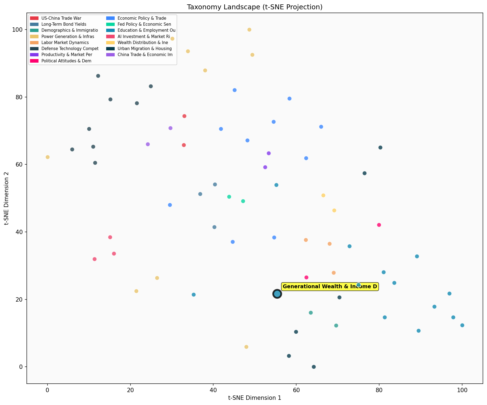

Description
This subcluster examines intergenerational economic differences, focusing on wealth accumulation, income growth patterns, and financial outcomes across generational cohorts (Gen Z, Millennials, Gen X). Articles predominantly analyze Federal Reserve wealth data, labor statistics, and demographic economic trends to compare how different generations fare at similar life stages. Common themes include student debt burdens, homeownership affordability, wage growth disparities, and workforce participation rates. Unlike sibling subclusters that focus on educational achievement metrics or workplace management effectiveness, this cluster specifically tracks long-term economic mobility and wealth-building capacity across age cohorts, often revealing how economic conditions during formative years shape lifetime financial trajectories.
Similarity to All 70 Subclusters
Each cell represents a subcluster. Color intensity shows similarity (blue=low, red=high). Black line marks current subcluster position.
Relationship to Primary Clusters
Average similarity to each of the 15 primary clusters. Larger area = stronger relationship to that cluster.
Taxonomy Landscape
All 70 subclusters positioned by similarity (t-SNE). Current subcluster highlighted with label. Click to enlarge.
Network Connections
Current subcluster at center, connected to related subclusters. Line thickness = similarity strength.
Most Representative Articles
-
1. Millennials median net worth is up $650 relative to previous generations at the same point during li
-
2. The Federal Reserve says millennials are broke, but Pew says they're loaded. The truth likely lies s
-
3. At the start of 2024, the real wealth of Millennials (aged 27 to 44) was ~25% higher than Gen Xers a
-
4. Millennials are catching up in terms of generational wealth. Older millennials made significant real
-
5. Millennial wealth is now keeping pace with prior generations at this point in their life cycles. @je
Edge Cases (Boundary Articles)
-
1. In an analysis of the 2022 midterms using voter file data, @Catalist_US finds younger voters exceedeThis article is borderline because while it mentions younger voters (18-29), it focuses on voting behavior and political preferences rather than economic factors like wealth accumulation, income disparities, or financial outcomes across generations. The content is primarily about electoral participation and party support, which aligns much better with voter demographics analysis than with generational economic differences.
-
2. Americans born after 2000 are less likely to support free speech than previous generations; this shiThis article is borderline because while it discusses generational differences (Gen Z vs. previous generations), it focuses on political attitudes toward free speech rather than economic outcomes like wealth accumulation or income disparities that define the assigned cluster. The content is more aligned with generational political preference gaps than financial/economic generational differences.
-
3. An @AEI survey finds Gen Z is socially isolated relative to prior generations with only 56% of themThis article is borderline for the "Generational Wealth & Income Disparities" cluster because it focuses on social relationships and romantic partnerships rather than economic outcomes, wealth accumulation, or income patterns across generations. While it does compare generational behaviors, the content about teenage dating experiences doesn't directly relate to financial disparities or economic differences between generational cohorts.
Original Dendrogram